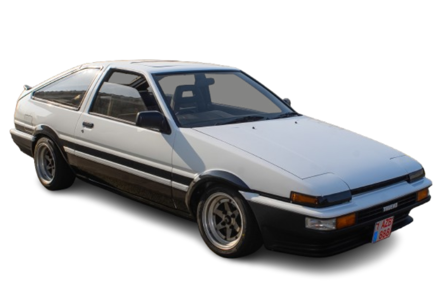
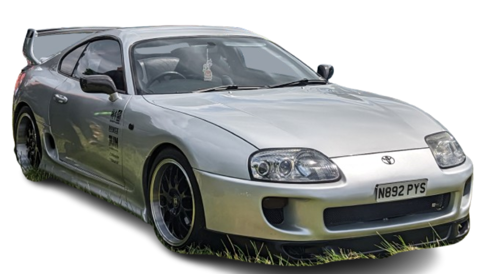
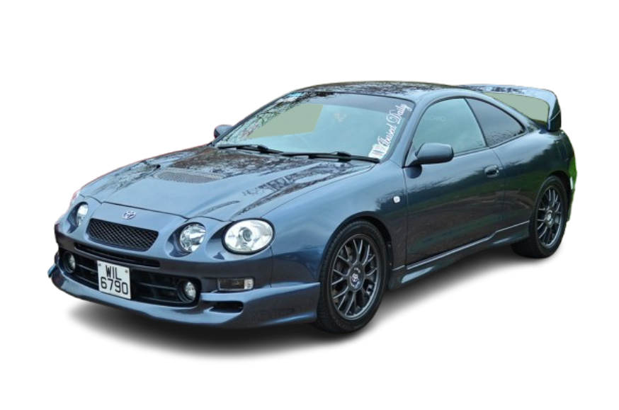
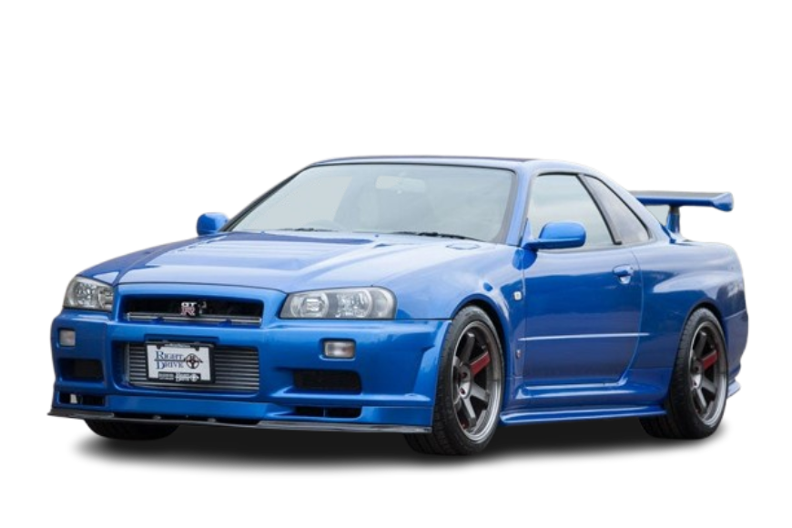
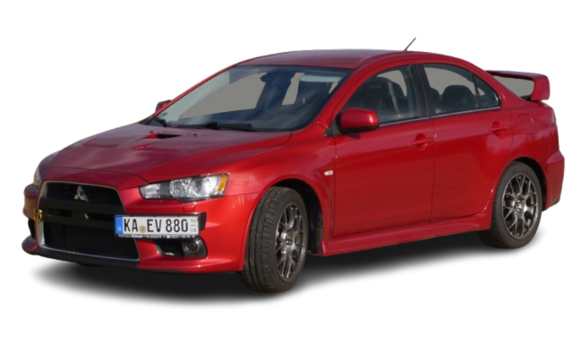

Dive into the heart of Japanese automotive excellence with our dedicated JDM Car page. Discover detailed profiles of legendary models that have shaped the tuning world, from the revered Nissan GT-R and Toyota Supra to the agile Toyota AE86 and the legendary Mazda RX-7. Each car's page offers in-depth insights into its performance, history, and tuning potential, showcasing why these vehicles continue to captivate enthusiasts around the globe. Whether you're a seasoned tuner or a curious newcomer, our comprehensive guides will fuel your passion for JDM cars and keep you informed about the best in Japanese automotive engineering.
Stock Horsepower: 112 hp
Price (In Today's Money): $30,000
Units Made: ~160,000
Engine Type: 1 .6L Inline-4 (4A-GE)
Blurb: The Toyota AE86, also known as the Corolla GT-S in the U.S., is a beloved icon in the world of JDM tuning. Celebrated for its lightweight, rear-wheel-drive setup, and responsive 1.6-liter engine, the AE86 has earned its place in drifting history and continues to be a favourite among enthusiasts for its balance and agility.
Stock Horsepower: 276 hp (Turbo Model)
Price (In Today's Money): $70,000
Units Made: ~10,000 (Turbo Model)
Engine Type: 3.0L Inline-6 (2JZ-GTE)
Blurb: The Toyota Mk4 Supra is a legendary sports car that gained fame for its robust 2JZ-GTE engine and impressive performance. Known for its tuning potential and high-speed capability, the Mk4 Supra has achieved cult status among car enthusiasts and continues to be a highly sought-after collector's item.
Stock Horsepower: 190 hp
Price (In Today's Money): $45,000
Units Made: ~10,000
Engine Type: 2.0L Inline-4 Turbo (3S-GTE)
Blurb: The Toyota Celica GT4, particularly the ST205 model, is renowned for its rally pedigree and all-wheel-drive system. With its turbocharged 2.0-liter engine and rally-winning heritage, the Celica GT4 offers a thrilling driving experience and remains a respected icon in the world of motorsport-inspired vehicles.
Stock Horsepower: 280 hp
Price (In Today's Money): $90,000
Units Made: ~11,000
Engine Type: 2.6L Inline-6 Turbo (RB26DETT)
Blurb: The Nissan R34 Skyline GT-R is a celebrated legend in the JDM community, known for its advanced technology and performance. With its powerful RB26DETT engine and sophisticated ATTESA all-wheel-drive system, the R34 GT-R is revered for its track-ready capabilities and iconic status.
Stock Horsepower: 280 hp
Price (In Today's Money): $50,000
Units Made: ~25,000
Engine Type: 2.0L Inline-4 Turbo (4G63T or 4G63)
Blurb: The Mitsubishi Lancer Evolution, often referred to simply as the Evo, is a rally-bred performance car known for its turbocharged power and all-wheel-drive capability. Its aggressive stance and motorsport heritage make it a standout choice for driving enthusiasts and competitive racers alike.
Stock Horsepower:
Price (In Today's Money):
Units Made:
Engine Type:
Blurb: The Mazda RX-7 series, including both the FD and FC models, is celebrated for its unique rotary engine and dynamic handling. The FD, with its advanced rotary engine and lightweight design, is particularly revered in the tuning community, while the FC offers a more accessible entry into rotary performance.